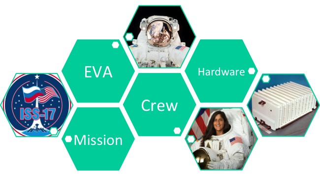
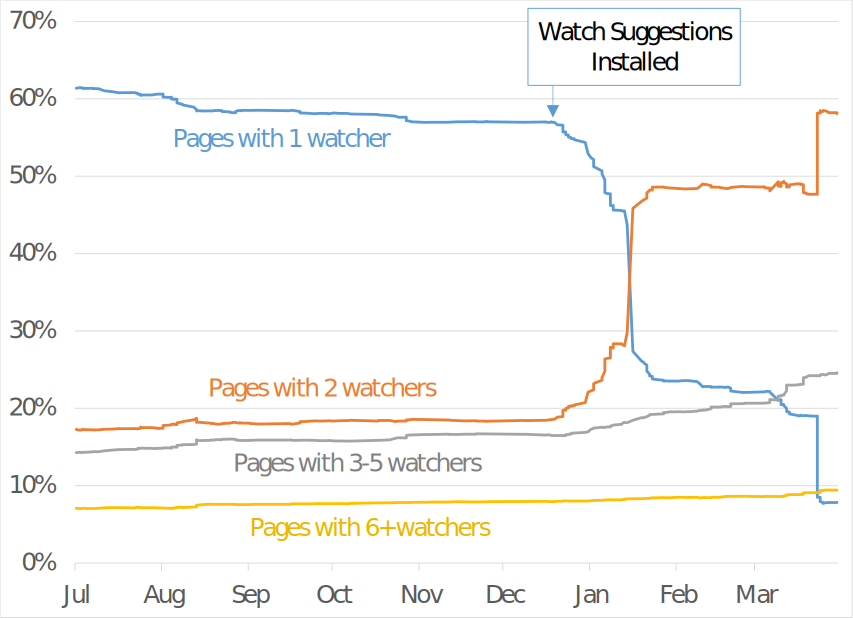
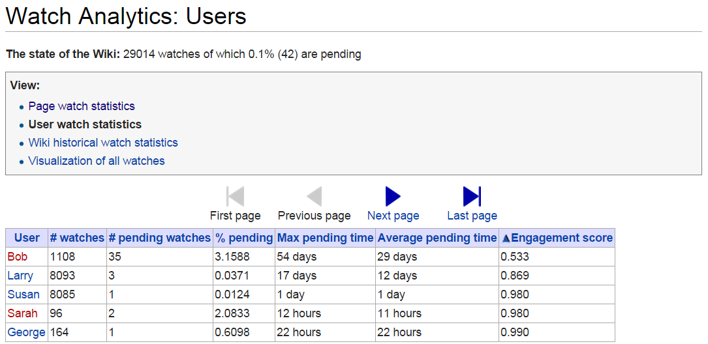
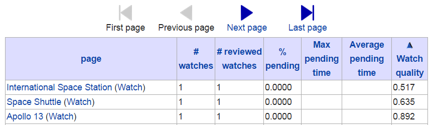

EVA Wiki Overview
James Montalvo - Daren Welsh - Stephanie Johnston
(Use arrow keys to navigate)
A brief history
NASA Flight Operations is the group of people who
- Plan human spaceflight missions
- Train astronauts
- Support astronauts during their missions via Mission Control Center (MCC)
Groups
This directorate is split into about 20 groups
We're in the Extravehicular Activity (EVA) group
(NASA-speak for "spacewalks")
How We've Always Done It
Folder Structures
What began as paper folders of typed documents ...
Grew to gigabytes of electronic folders
This led to problems
Directory trees are difficult to search
Multiple copies and versions of documents
- Which one do I trust?
- Do I have to update all of them?
Files are easily moved or deleted
The "Wiki Way"

- Search, don't sort
- Search content, not just file names
- A single portal for information
- Automated revision control
- Semantic linking
- Quantifiable accountability
Mission History
We created a page for each ISS and Shuttle mission. In each page, we set semantic properties for each crew member, flight controller, and relevant hardware item.
Mission History
We can then query for data ...
{{#ask: [[Category:Expedition]]
|Mainlabel=Expedition
|? Commander
|sort = Mission start date
|order = asc
}}
Mission History
... and we can elegantly display this data on any page

Demo of Semantic MediaWiki
A scale of two wikis
- Wikipedia
- 1000s of active contributors
- Some pages have major coverage... some do not
- The EVA Wiki
- 47 active contributors
- 67272 edits
- 400k views in 3.5 years
Watcher Distribution: December 2014

Quantifying Accountability
- Determine number of reviewers for each page
- Determine a way to rate contributors
- Combine (1) and (2) to identify weak points in our data
- Address weak points
Extension:Watch Analytics

Watcher⬄page relationships

Accountability Emergency
Short term goals
- Increase number of watchers for each page
- Increase frequency of reviews performed on each page
- Increase quality of reviews performed on each page
Pending Reviews

How well are we doing with reviewers?
Big improvements

At the bottom of Pending Reviews
Watch Suggestions

How has Watch Suggestions helped?
Rating reviewers and pages
- Probability of correctness
- Engagement Score
User Statistics
Page Watch Quality
Page Watch Quality

Culture Changes
Goals
Without continuous contributions and qualified reviews from everyone in your community, a wiki is just another dumpster of outdated and unreliable information.
Refocus our goals
Instead of focusing on adding content, our focus is now on the quality of our content.
Even Wikipedia is criticized for focusing on quantity over quality (Source)
Range of Response
- Early adopters
- Those that began using after some help and motivation
- Viewers, but not contributors
- Viewers, contributors, but not reviewers
- Stubborn, refuse to even view the wiki
Motivation
Extrinsic vs. Intrinsic
Intrinsic motivation
- Competence
- Autonomy
- Relatedness
User Personality Types
Based on an interview with Amy Jo Kim- Competitors - Act on other users (challenge, showoff, compare)
- Self-Expressers - Act on content (create, build, design, customize)
- Explorers - Interact with content (view, collect, review, curate)
- Collaborators - Interacting with users (share, comment, help)
Online Communities
- In a zero-sum game, we are opponents: One wins, others lose
- In a non-zero-sum game, we are partners: We all win or we all lose
User activity loops
- Tutorials, Screencasts, and Guided Tours
- Meeting Minutes
- Missions/EVAs
- Subject Matter Experts
- Pending Reviews
- Page Scores
What we've been missing
- Have we accounted for all four personality types?
- Competition
- Self-Expression
- Exploration
- Collaboration
- Have we provided for intrinsic motivation?
- Competence
- Autonomy
- Relatedness
What we plan to add
Thanks

Fun

Gamification Framework
- Define objectives
- Delineate target behaviors
- Describe players
- Devise activity loops
- Don't forget the fun
- Deploy the appropriate tools
Resources
Contacts
EnterpriseMediaWiki.org (github / @enterprisemw)
- James Montalvo (github / @jamesmontalvo3)
- Daren Welsh (github / @darenwelsh)
- Stephanie Johnston